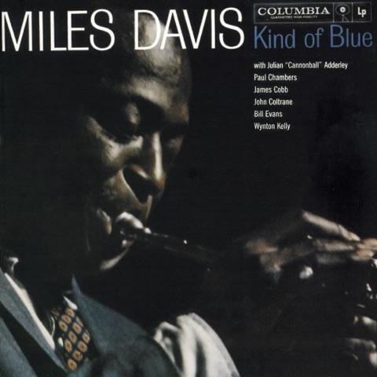

三张唱片，加入收藏 14:32 3 张专辑·33 首曲目 翻阅唱片 ↗Kind of BlueMiles Davis 1959 翻阅唱片 ↗Abbey RoadThe Beatles 1969 翻阅唱片 ↗PostBjörk 1995
为已有唱片，补入两首 10:18 The Beatles White Album The Beatles ·1968 ＋ 2 首 ＋BlackbirdDISC 1 · 112:18 ＋I WillDISC 1 · 161:46 查看这张唱片 ↗
又收进三张唱片 19:05 3 张专辑·41 首曲目 翻阅唱片 ↗Unknown PleasuresJoy Division 1979 翻阅唱片 ↗1989Taylor Swift 2014 翻阅唱片 ↗LoverTaylor Swift 2019